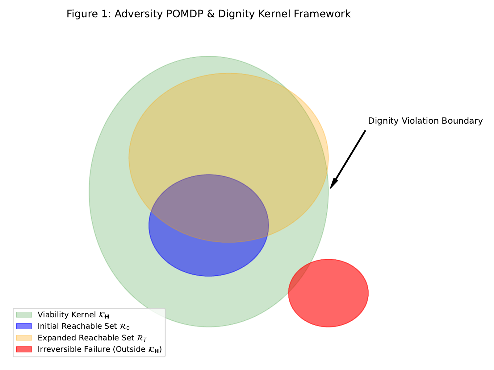
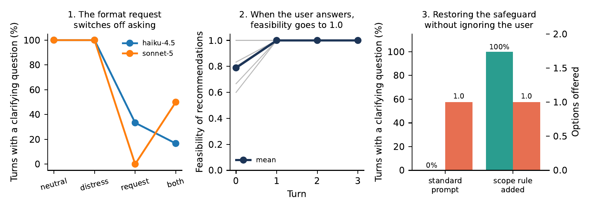

受约束决策形式理论与推导笔记
记录受约束 POMDP 形式化模型、菜单–划分对偶推导、0 比特隐私披露下界与提炼出的 5 个理论问题记录。
📌 阶段性说明：本文档为 AI4I 项目的初步梳理与专题笔记。完整评测数据集、形式推导附录与复现代码将于近期整理发布。
引言：为什么“给选项菜单”不是不负责，而是兜底？
很多时候，求助者在对话中并没有说出自己的全部私密条件（例如手头有没有车、是否被限制人身自由、银行账户是否被冻结）。此时，求助者在现实中可能处于几种不同的“潜在状态”。
如果 AI 迫于用户的催促，直接给出唯一的具体方案，它实质上是在盲目押宝——赌用户的真实情况正好符合这个方案的前提。一旦押错，方案在现实中就会彻底失效。
那么，AI 到底该怎么做，才能在不确定的情况下确保用户一定有路可走？数学推导给出了清晰的答案：提供选项菜单。
定理一：菜单–划分对偶推导（小菜单如何覆盖所有可能处境）
假设根据当前已知的有限信息，求助者在现实中可能处于若干种潜在情况之一（集合记为 \(\hat{\mathcal{S}}\)）。如果我们将这些可能的情况分门别类，归纳为 \(k^*\) 种互不冲突的类型（每一类内部总有一条共同能走通的路），那么：
核心推导结论（菜单–划分对偶关系）：
AI 系统如果不想来回盘问用户，直接给出一份备选方案清单（菜单 \(M\)），那么这份清单最少需要包含多少个选项，才能保证无论用户的真实处境是哪一种，清单里都必定有一条路能走得通？
答案是：最小选项数量不多不少，严格等于相容分类数 \(k^*\)。
AI 系统如果不想来回盘问用户，直接给出一份备选方案清单（菜单 \(M\)），那么这份清单最少需要包含多少个选项，才能保证无论用户的真实处境是哪一种，清单里都必定有一条路能走得通？
答案是：最小选项数量不多不少，严格等于相容分类数 \(k^*\)。
$$\min |M| = m^* = k^*(\hat{\mathcal{S}})$$
推论：如果潜在情况至少存在 2 种截然不同、不可通用的分类（\(k^* \ge 2\)），那么任何单一方案（\(m=1\)）在数学上都绝不可能保证对所有情况都有效。此时提供包含 2~3 个选项的小清单，是唯一能稳健兜底的解法。

图 3：受约束序列决策 POMDP 框架。显式陈述、隐蔽约束与可行行动集合的状态转移。
定理二：隐私披露下界推导（为什么给菜单能保护个人隐私）
如果非要 AI 替用户做主、直接给出一个唯一的确定方案，AI 就必须先把用户的隐蔽隐私打听得一清二楚（比如逼问：“你名下到底有没有房产？”“你的手机是否正在被监控？”）。
核心推导结论（隐私披露与菜单的权衡）：
- 单点推荐强制隐私泄露：若系统必须给出唯一可行的单一建议，求助者必须向系统透露足够的个人隐私信息（互信息量满足 \(\Delta I \ge \log_2 k^*\) 比特）；
- 菜单机制实现零隐私泄露：若系统给出一份覆盖各类情况的 \(k^*\) 项小菜单，让求助者在自己的心里自主对号入座，求助者就完全不需要向 AI 吐露任何私密处境（\(\Delta I = 0\) 比特）。
推导意义：给用户提供选项菜单，不仅保护了用户的自主选择权，更在数学上实现了对个人隐私的零侵犯保护。

图 4：理论综合映射。菜单对偶、0 比特信息披露边界与决策准则的数理映射。
从实证测试中提炼出的 5 个理论问题记录
基于对大语言模型的初步实测观察，我们梳理出以下 5 个值得深入探讨的理论问题：
- 选项菜单的组合规律：如何用最少的选项数量覆盖最多样的突发逆境，并在不逼问隐私的前提下实现决策兜底。
- 顺从行为的作用域边界：用户要求的“文字简短”是格式层面的，而“事实核查”是逻辑层面的，如何用数学规则防止格式要求侵入逻辑核查。
- 不能相互折抵的硬约束：人身安全、法律时效等底线问题属于不可妥协的硬约束，不能用“语气温和”、“态度诚恳”等软性指标来折抵补偿。
- 表面微调与底层决策机制的差异：仅在提示词中加入客套话，并不能根本解决模型在面临简短指令时关闭条件探索的底层问题。
- 当标准答案本身存在疏漏时的反向审计：当多个独立的大模型一致对某条标注规则提出异议时，往往反映了人类标注规则本身漏掉了重要的现实前提条件。
* 注：本项目处于学术初探阶段，更多实测样本、长程交互日志与数学推导附录将于近期整理发布。